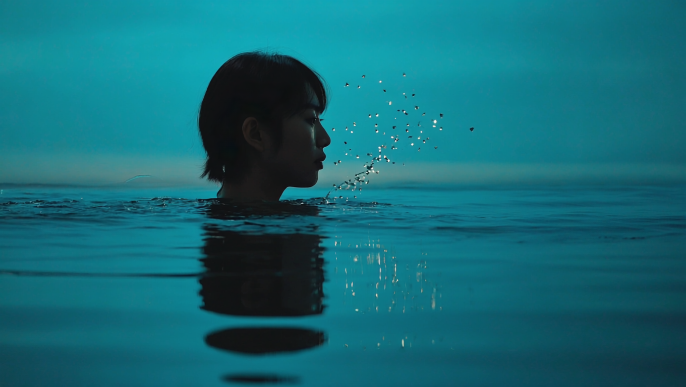
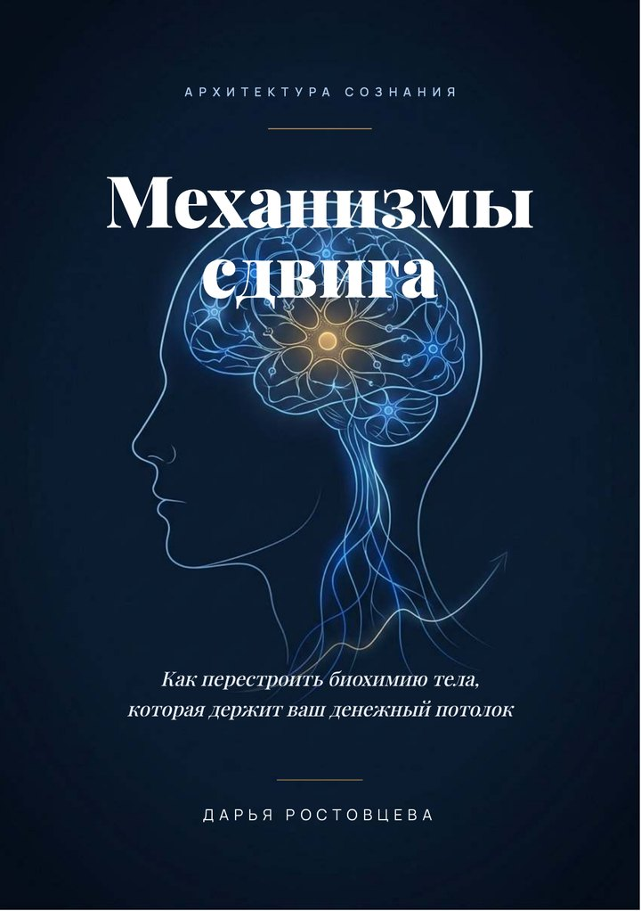
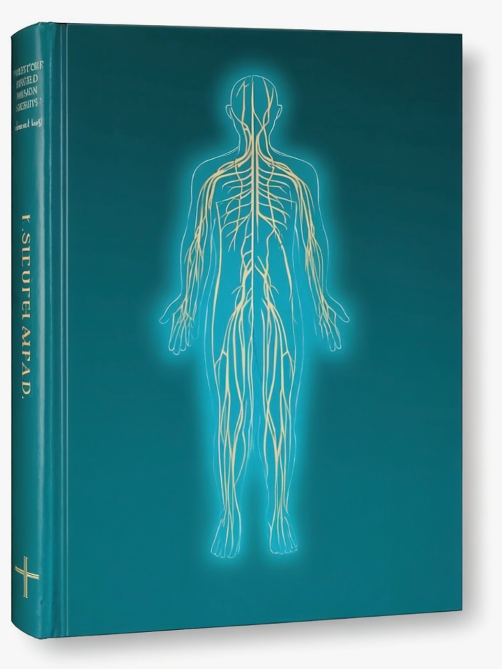

Знание о покое, теле и достатке, проверенное наукой и собранное в программы-маршруты.
Твоё сознание можно спроектировать, как дом. Три крыла, один хозяин. Выбирай, куда зайти.
То, что веками знали мудрецы, сегодня видно на приборах. Мы берём то, что проверено, и собираем в понятные шаги.
Ты идёшь маршрутом, день за днём, в своём темпе, и видишь прогресс в личном кабинете.
Перенастройка денежной программы. Каждый день открывается по расписанию, с аудио и заданиями.
Смотреть программу
Голова перестаёт гудеть, внутренний диалог затихает. Маршрут на четыре недели.
Смотреть программуЗаписи, книги и длинные программы. Выбирай по крылу и по формату.
Две книги бренда: глубоко и по делу. Читаешь в своём темпе и возвращаешься к главному.

Шесть гормональных механизмов денег, четыре финансовых архетипа, протокол сдвига и дневник на 30 дней.

30 сигналов тела и 50+ анализов: как услышать организм раньше, чем он перейдёт на крик.
Входишь по почте и видишь всё, что купил: курсы, прогресс по дням, аудио и практики. Каждая новая программа появляется здесь же.
Войти в кабинетОдин вход, живые практики и состояние, которое остаётся. Без марафонов силы воли и без гуру над душой.
Один аккаунт, и все программы, записи и практики собраны в одном месте. Прогресс виден, ничего не теряется.
Короткие практики по 15-16 минут ведут за руку. Не теория на полке, а конкретный шаг на сегодня.
Тело и мозг постепенно перестраиваются во сне и в повторении. Меняется не настроение на день, а колея.
Доступ и записи сохраняются. Практики можно возвращать в любой момент, когда снова нужна опора.
Живые слова участников из наших чатов. Мы не выдумываем отзывы и не обещаем результат, каждый путь свой.